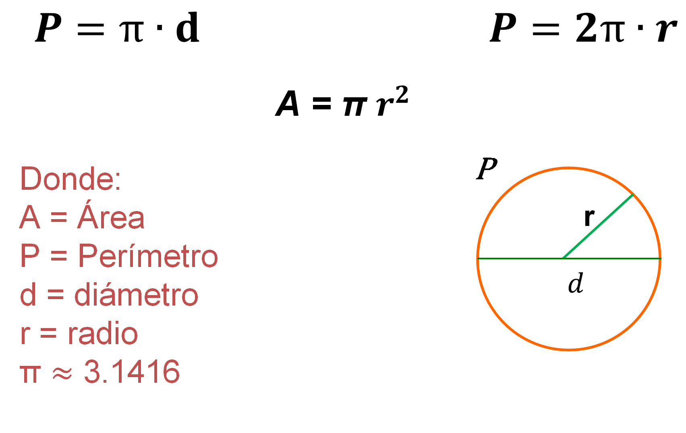

<ion-card>
  <ion-card-header>
    <ion-card-title>Circulo</ion-card-title>
    <ion-card-subtitle>Perímetro</ion-card-subtitle>
  </ion-card-header>
  <ion-card-content>
    El perímetro de un círculo es la longitud de su borde.
  </ion-card-content>
  
</ion-card>
<ion-input
type="number"
(ionInput)="handleInput($event)"
placeholder="Ingrese el radio (cm)"
>
</ion-input>
<ion-button
  (click)="calcPerimeter()"
  color="primary"
  expand="block"
>
  Calcular
</ion-button>
@if (perimeter !== null) {
  <span>
    El perímetro del círculo es {{ perimeter }} cm
  </span>
}